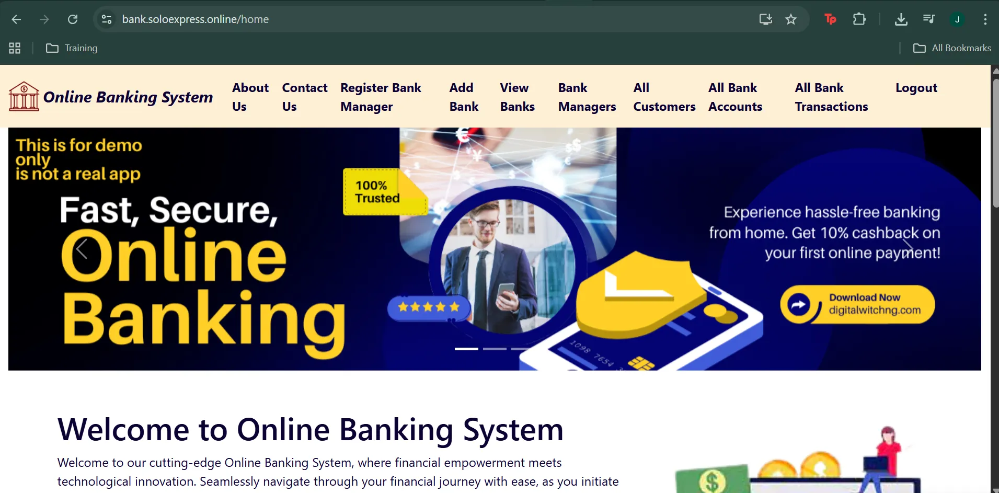
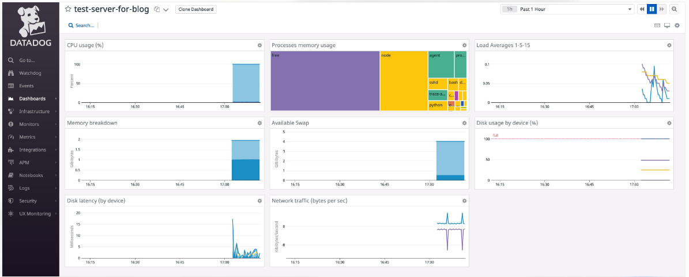
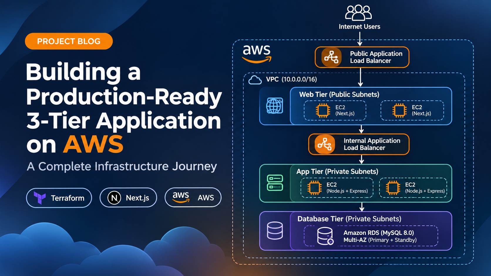

AWS Cloud Infrastructure
Cloud infrastructure deployment using AWS services, including EC2, S3, IAM, networking, load balancing, and scalable hosting configurations.
AWS CLOUD • ARCHITECTURE • DEVOPS
AWS Certified Solutions Architect – Associate
AWS Cloud Engineer | Cloud Solutions Architect | DevOps Engineer
I build and automate secure, scalable cloud infrastructure using AWS, Terraform, Docker, Kubernetes and CI/CD practices. My project experience spans cloud architecture, infrastructure provisioning, application deployment, monitoring and cloud security.
AWS
Certified
3
Core Focus Areas
Cloud
Project Experience
WHAT I DO
I work across cloud infrastructure, automation, security-conscious deployments, monitoring, and responsive website development.
Cloud infrastructure deployment using AWS services, including EC2, S3, IAM, networking, load balancing, and scalable hosting configurations.
Security-conscious cloud configurations, IAM access controls, least-privilege principles, and secure deployment practices for cloud environments.
Deployment workflows using Git, GitHub Actions, Docker, and automation practices to make application delivery more consistent and repeatable.
Infrastructure monitoring, metrics dashboards, threshold-based alerts, and operational visibility using tools such as Datadog, Prometheus, and Grafana.
Responsive business websites, custom WordPress themes, property listing experiences, and website deployment tailored to business needs.
Infrastructure provisioning and repeatable environment configuration using Terraform and AWS infrastructure tools.
Portfolio

Deployed a three-tier online banking web application on Amazon EKS. Used Terraform to provision cloud infrastructure and ArgoCD to manage GitOps-based deployments. The project includes containerized frontend and backend services, Amazon ECR, Kubernetes manifests, and HTTPS access.
View project case study
Contributed to an AWS-focused cloud optimization decision platform supporting cloud governance, security analysis, cost optimization, and actionable recommendations. Further technical details are withheld to respect company confidentiality.
View project →
Developing a luxury real estate website featuring property listings, search and filtering, short-let offerings, and a refined responsive design.
View project →
Configured virtual machine monitoring, dashboards for system metrics, and threshold-based alerts. Explored alert and recovery validation with email and Slack notifications where configured.
View project →
Explored scalable web hosting using EC2, AMIs, launch templates, Auto Scaling Groups, load balancing, DNS, and TLS/SSL configuration.
View project →ABOUT ME
I'm Florence Obianuju, an AWS Certified Solutions Architect Associate with a background in Chemistry and a growing focus on Cloud Security, DevOps, and cloud infrastructure.
Through hands-on projects, I've worked with AWS services, Terraform, Docker, Kubernetes, and CI/CD workflows. My experience also includes infrastructure monitoring, automated deployments, and building responsive websites with WordPress and custom code.
I enjoy learning through practical projects, solving technical problems, and building solutions that are secure, maintainable, and useful. I'm continuing to grow my skills in cloud engineering, automation, and security.
STACK & TOOLS
Thoughts

A complete infrastructure journey exploring the architecture, deployment process, troubleshooting, and lessons learned while building a three-tier application on AWS using Terraform and modern application technologies.
Read article →Learn how I explored Kubernetes hands-on using kind on Windows, from Pods and Deployments to Services, self-healing, autoscaling, and health probes.
Read article →A hands-on account of building an AI-assisted DevOps pipeline with Claude Code, exploring the workflow, challenges, lessons learned, and the role of AI in infrastructure automation.
Read article →Get in touch
I'm open to Cloud, DevOps, and Cloud Security opportunities, as well as infrastructure automation and deployment projects. Have a project or opportunity in mind? Let's connect.
obianujuflorence02@gmail.com Connect with me on LinkedIn Explore my GitHub projects